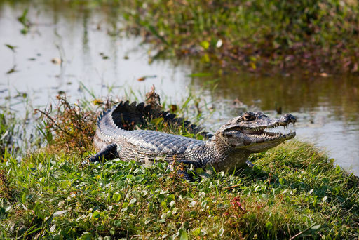
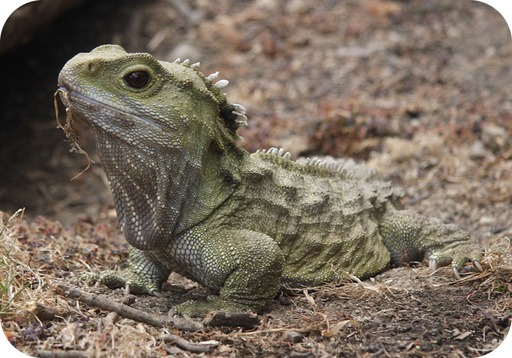
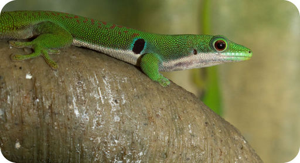
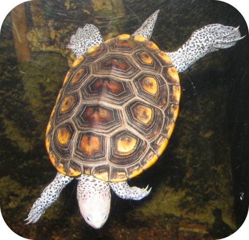

| Order | Characteristics | Example |
|---|---|---|
| Crocodilia: crocodiles, alligators, caimans, gharials | They have four sprawling legs that can be used to gallop; they replace their teeth throughout life; they have strong jaws and a powerful bite; they have a more advanced brain and greater intelligence than other reptiles; they have a four-chambered heart. |
caiman  |
| Sphenodontia: tuataras | They are the least specialized of all living reptiles; their brain is very similar to the amphibian brain; they have a three-chambered heart, but it is more primitive than the heart of other reptiles. |
tuatara  |
| Squamata: lizards, snakes |
Lizards: most have four legs for running or climbing, and they can also swim; many change color when threatened; they have a three-chambered heart. Snakes: they do not have legs, although they evolved from a tetrapod ancestor; they have a very flexible jaw for swallowing large prey whole; some inject poison into their prey through fangs; they have a three-chambered heart. |
lizard  |
| Testudines: turtles, tortoises, terrapins | They have four legs for walking; they have a hard shell covering most of their body; they have a three-chambered heart. |
terrapin  |